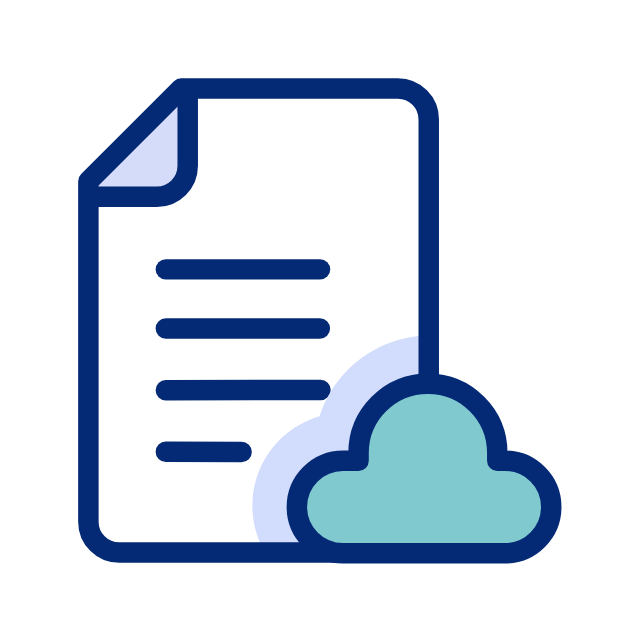

How DocAcquire’s
Document Chat Works?
STEP 1

Upload
Upload
Your Document
Drag and drop your file into the upload area or select a document from your computer. No need for complicated setups—just an easy, seamless upload process.
STEP 2
Ask
Question(s)
Type your question in the chat interface and hit send. Want to know specific details, extract data, or summarize content? It’s all possible with our intuitive chat system.
STEP 3
Get
Answers
Instant answers—receive structured, actionable insights without any waiting or manual searches. Get clear, concise information at your fingertips instantly.